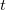
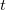
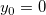
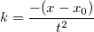
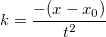
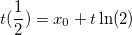

= A_0e^{-kt}")
Letztes Update: 04.02.2015
Normalerweise lautet die Standardform der einzelnen Funktion für den exponentiellen Zerfall
wobei  die anfängliche Grundgesamtheit,
die anfängliche Grundgesamtheit,  die Zerfallskonstante und  die Zeit ist. In diesem Fall ist die Formel für
die Zerfallskonstante und  die Zeit ist. In diesem Fall ist die Formel für } {k}") .
.
In Origins Fall wird eine der einzelnen Gleichungen des exponentiellen Zerfalls (ExpDecay1) beschrieben mit:
} {t}}")
Angenommen, . Die Gleichung ist dann } {t}}") . Wenn die Gleichungen danach einander gleich gesetzt und für gelöst werden, ergibt sich . Da dies der Fall ist, wird die Gleichung für die halbe Lebensdauer
. Wenn die Gleichungen danach einander gleich gesetzt und für gelöst werden, ergibt sich . Da dies der Fall ist, wird die Gleichung für die halbe Lebensdauer

Schlüsselwörter:Exponentieller Fit